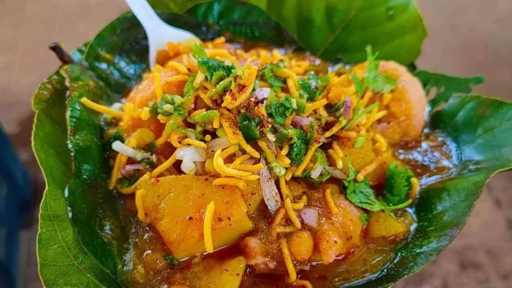
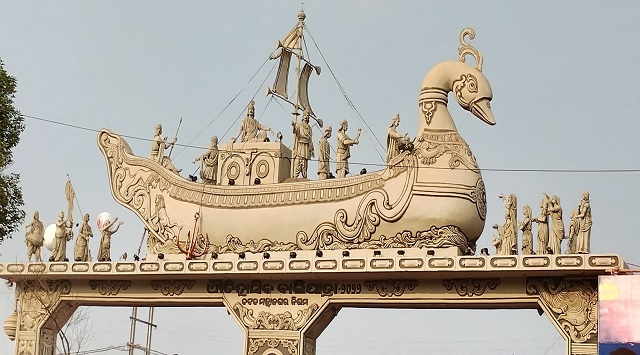

Culture of Cuttack
Cuttack is a vibrant city known for its rich cultural heritage, including its world-famous silver filigree work (Tarakasi), grand festivals like Durga Puja and Bali Jatra, and a thriving literary scene. The city is also renowned for its traditional cuisine, music, dance, and art forms that reflect the diverse traditions of Odisha.
Our Culture

